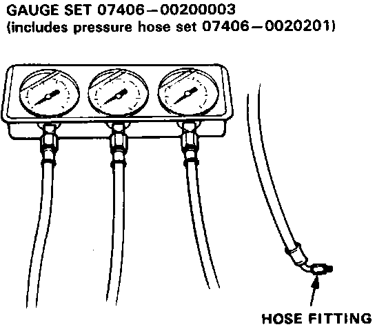
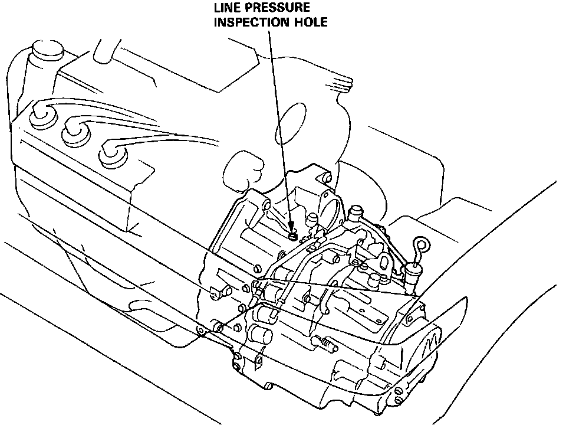
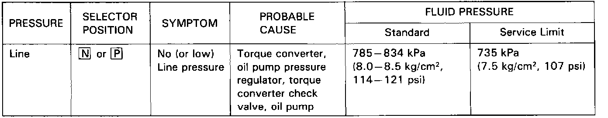
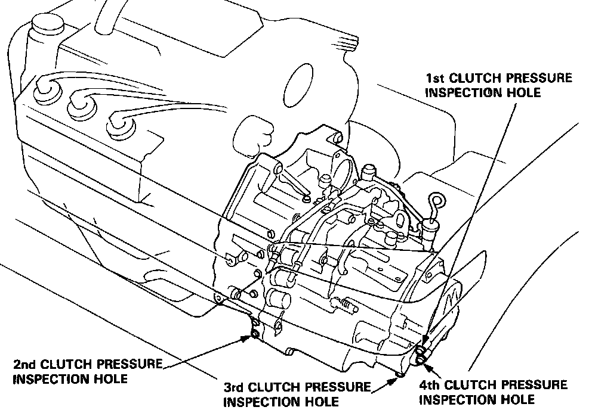
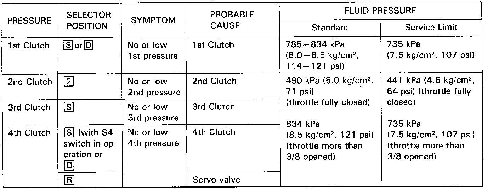
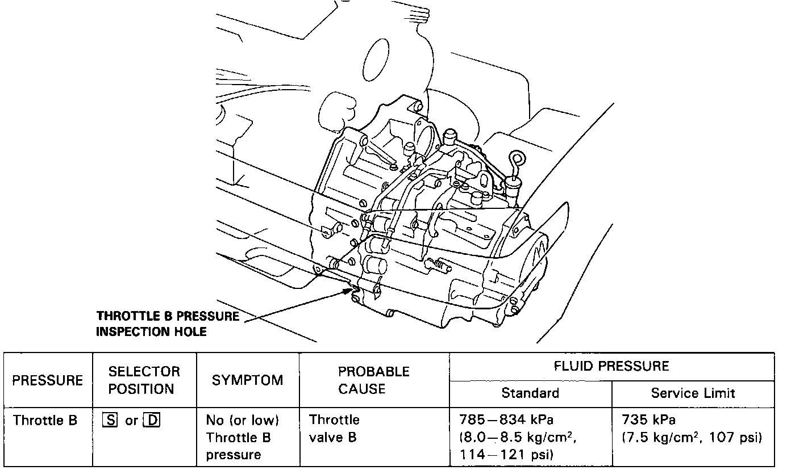

Pressure Tests
PRESSURE TESTING
CAUTION: Before testing, be sure transmission is filled to proper level.
NOTE:
^ Stop engine when attaching hoses for pressure tests.
Torque hose fitting to 18 Nm (1.8 kg-m, 12 lb.ft).
^ Do not reuse aluminum washers.
Line Pressure Measurement


^ Set the parking brake securely.
^ Run the engine at 2,000 rpm.
Clutch Pressure Measurement


^ Set the parking brake securely and block the wheels.
^ Jack up the front of the car and support it with a rigid rack.
^ Run the engine at 2,000 rpm.
Throttle B Pressure Measurement

^ Set the parking brake securely and block the wheels.
^ Run the engine at 1 000 rpm.
^ Disconnect the throttle control cable from the throttle lever and set the control lever in full throttle position.